人工神经网络是什么
在本教程的开篇《人工智能是什么》一节中详细的阐述了深度学习发展历程，以及人工智能、机器学习、深度学习三者间的关系。就目前而言，这三者中红到发紫的当属“深度学习”。
深度学习（Deep Learning）这一概念是由 Geoffrey Hinton（深度学习之父）于 2006 年提出，但它的起源时间要早得多，可追溯至 20 世纪四五十年代，也就是人类刚刚发明出电子计算机时就已经提出来了，但当时并非叫做深度学习，而是人工神经网络（artificial neural network, ANN），简称神经网络（NN），它是一种算法模型，其算法的构思灵感来源于生物神经网络。
深度学习作为一个新兴概念，谈起时都会涉及如何搭建神经网络，由此可见深度学习的核心思想仍是人工神经网络模型。目前的神经网络算法与刚刚诞生时相比有了很大的变化，但总的来说，基本的算法思想并没有改变。本节内容将主要围绕人工神经网络展开介绍。
1943 年，美国心理学家麦克洛奇（Mcculloch）和数学家皮兹（Pitts）提出了 M-P 神经元模型（取自两个提出者姓名的首字母），这是最早、也是最简单的神经网络算法的模型，该模型意义重大，从此开创了神经网络模型的理论研究。在正式介绍 MP 神经元模型前，我们不妨先了解一下大脑神经元。
树突，可以看作输入端，接受从从其他细胞传递过来的电信号；轴突可以看作输出端，传递电信号给其他细胞；突触，则可以看成 I/O 接口，用于连接不同神经元，单个神经元可以和上千个神经元进行连接；细胞体内存在膜电位，外界传递过来电流时会使膜电位发生变化，当电位升高到一个阈值时，神经元就会被激活，产生一个脉冲信号，传递到下一个神经元。
为了便于大家理解神经元传递信号的过程，我们不妨把神经元看成一个水桶。水桶一侧的下方连接着多根水管（看做树突），水管即可以把桶里的水排出去，也可以将其他桶内的水输入进来，水管的粗细不同（理解为权重大小），对桶内水位的影响程度不同，当桶内的水位达到某一范围时（阈值），就能通过水桶另一侧的排水管将水（轴突）排出，从而降低水桶的水位。
M-P 模型是神经网络的基本组成单位，在神经网络中也称为『节点（node）』或者『单元（unit）』。节点从其他节点接受输入，或从外部源接受输入（即 x1、x2、1），每个输入都带有一个权重值（weight，即 w），权重大小取决于输入值的相对重要性。函数 f 位于节点处，它是一个关于 ω、x 的线性函数，记做 f(x,ω) ，输入 b 表示函数的偏置项，最后经过 f(w,x) 的计算得输出 Y。模型如下所示：
上述模型对于神经网络说来说具有重要的意义，它是神经网络研究的开端。您可能会很诧异，几个带有箭头线段、一个圆形竟然就能表示 M-P 神经元模型？ 正所谓大道至简，它的确就是神经元模型，上图所示模型由 3 部分组成，从左往右依次为：神经元的输入、输入信号处理单元，以及神经元的输出。
M-P 模型采用数学模型模拟了生物神经元所包含的细胞体、树突、轴突和突出等生理特征。通过 M-P 模型提出了神经元的形式化数学描述和网络结构方法，从而证明了单个神经元能执行逻辑功能，但由于模型中的权重和偏置是人为设置的，因此该模型并不具备学习的能力。
虽然具备了学习的能力，但该模型只能解决简单的线性分类和线性回归问题，对于线性不可分问题（即异或问题，xor）仍无法解决（1969年，科学家明斯基和佩珀特证明）。如下图所示，无法找到一条直线可以把圆形和菱形分开：
感知器模型算法与神经元模型类似，是一个单层神经元结构，它首先对输入的数据进行加权求和，然后将得到的结果与阈值进行比较，假如与所期望的输出有较大误差，就对权值参数进行调整，反复多次，直到误差满足要求时为止。由上图可知单层感知器的输出为：
下面举个简单例子，看看单层感知器如何完成逻辑与运算（即 And，x1 ∧ x2）:
令 w1 = w2 =1，θ = 1.5，则 y =f(1*x1+1*x2-1.5)，显然，当 x1 和 x2 均为 1 时，y 的值为 1；而当 x1 和 x2 中有一个为 0 时，y 的值就为 0（通过 y 值的正负来取值，正值取值 1，负值取值 0，从而实现线性分类），当然逻辑或运算、与逻辑非运算也可通过此方法验证。
异或是一个数学运算符号，使用 ⊕ 来表示，计算机一般用 ^ 来表示。异或也叫半加运算，其运算法则相当于不带进位的二进制加法，用 1 表示真，用 0 表示假，运算法则为“同为 0，异为 1”。：
上述感知器模型依然模拟了神经元结构，有输入（input）、权重（weight）、前馈运算（feed forward）、激活函数（activation function）、输出（output）等部分组成。注意，这里的前馈运算指的是图 3 中的『加权求和』，即在没有使用激活函数时输入值的加权求和结果，有时也记做『logit』。
通过上述模型很容易实现二分类。只需将对加权求和的结果值进行判断即可，比如 x>0 为 1 类，若 x <=0 则为 0 类，这样就将输出结果值映射到了不同类别中，从而完成了二分类任务。激活函数公式如下：
与单层感知器模型相比，该模型在输入层与输出层之间增加了隐藏层（Hidden），同时输出端，由原来一个增至两个以上（至少两个），从而增强了神经网络的表达能力。注意，对于只有一层隐藏层的神经网路，称为单隐层神经网络或者二层感知器，网络拓扑图如下所示：
从图 6 不难发现，多层感知器模型是由多个感知器构造而成的，模型中每一个隐藏层节点（或称单元）都可以看做成一个感知器模型，当我们将这些感知器模型组合在一起时就可以得到“多层感知器模型”。输入层、隐藏层与输出层相互连接形成了神经网络，其中隐藏网络层、输出层都是拥有激活函数的功能神经元（或称节点）。
在神经网络中的隐藏层可以有多层，当隐藏层有多层，且形成一定“深度”时，神经网络便称为深度学习（deep learning），这就是“深度学习”名字的由来。因此，深度学习就是包含了多个隐藏层的多层感知器模型。如下图所示，是具有两个隐藏层的神经网络：
但『深度学习』这一概念直到 2006 年才被提出，在这之前多层感知器模型被称为“人工神经网络”。从神经元模型到单层感知器模型再到多层感知器模型，这就是人工神经网络的发展过程。在神经网络中每层的节点与下一层节点相互连接，节点之间不存在同层连接，也不存跨层连接，这样的网络结构也被称为“多层前馈神经网络”（multi-layer feedforward neural），如果层与层之间的节点全部相互连接，则称为“全连接神经网络”，如下所示：
多层感知器的诞生，解决了单层感知器模型无法解决的异或问题。下面简单分析一下解决过程。如图所示是包含了一个隐藏层的多层感知器模型：
在多层感知器模型中，隐藏层中的每一个节点都是想当于一个感知器模型。下面将输入值（x1 和 x2）带入隐藏层节点，可得以下函数式（这里的函数指的是激活函数）：
上图所示，位于红色直线之间的属于正类，而位于区域之外则属于负类。当然图像中只是包含了四个点而已，若是复杂的数据则可以选择不同的激活函数，比如 sigmoid 函数等。
直到 1986 年，深度学习教父 Hinton 等人对反向传播算法（Backpropagation algorithm，即误差逆向传播算法，简称 BP算法）进行了重新描述，证明了该算法可以解决网络层数过深导致的参数计算困难和误差传递等问题。
反向传播算法是一种用于训练神经网络的有监督学习算法，基于梯度下降（gradient descent）策略，以目标的负梯度方向对参数进行调整。但受限于当时（20世纪80年代）计算机算力不足等因素的影响，BP 算法只能以简单低效的方式来解决少数层神经网络训练问题，但即使如此，也已经弥足珍贵。
BP 算法的出现再次引发了 AI 研究的热潮，它是一款非常成功的神经网络算法，直到今天，该算法仍在深度学习领域发挥着重要的作用（用于训练多层神经网络）。
深度学习（Deep Learning）这一概念是由 Geoffrey Hinton（深度学习之父）于 2006 年提出，但它的起源时间要早得多，可追溯至 20 世纪四五十年代，也就是人类刚刚发明出电子计算机时就已经提出来了，但当时并非叫做深度学习，而是人工神经网络（artificial neural network, ANN），简称神经网络（NN），它是一种算法模型，其算法的构思灵感来源于生物神经网络。
深度学习作为一个新兴概念，谈起时都会涉及如何搭建神经网络，由此可见深度学习的核心思想仍是人工神经网络模型。目前的神经网络算法与刚刚诞生时相比有了很大的变化，但总的来说，基本的算法思想并没有改变。本节内容将主要围绕人工神经网络展开介绍。
MP神经元模型
人工神经网络是一种有监督学习算法，它试图通过模拟人脑神经系统对复杂信息的处理机制来构建一种数学模型。我们知道，神经元是构成生物神经系统的基本单元，而人工神经网络也不例外，它也是从神经元模型的基础上发展而来的。1943 年，美国心理学家麦克洛奇（Mcculloch）和数学家皮兹（Pitts）提出了 M-P 神经元模型（取自两个提出者姓名的首字母），这是最早、也是最简单的神经网络算法的模型，该模型意义重大，从此开创了神经网络模型的理论研究。在正式介绍 MP 神经元模型前，我们不妨先了解一下大脑神经元。
1) 生物神经元
神经元是大脑神经系统重要组成单位，主要由细胞体、树突、轴突、突触组成。神经元是一种多输入单输出的信息处理单元，输入的电信号有两种，分别是兴奋性信号和抑制性信号。树突，可以看作输入端，接受从从其他细胞传递过来的电信号；轴突可以看作输出端，传递电信号给其他细胞；突触，则可以看成 I/O 接口，用于连接不同神经元，单个神经元可以和上千个神经元进行连接；细胞体内存在膜电位，外界传递过来电流时会使膜电位发生变化，当电位升高到一个阈值时，神经元就会被激活，产生一个脉冲信号，传递到下一个神经元。
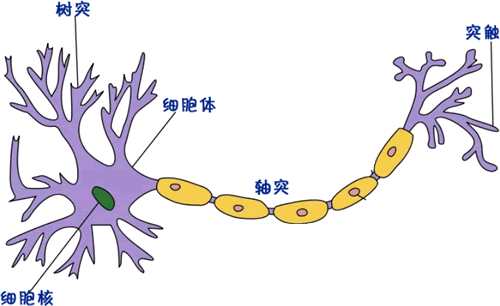
图1：生物神经元组成
图1：生物神经元组成
为了便于大家理解神经元传递信号的过程，我们不妨把神经元看成一个水桶。水桶一侧的下方连接着多根水管（看做树突），水管即可以把桶里的水排出去，也可以将其他桶内的水输入进来，水管的粗细不同（理解为权重大小），对桶内水位的影响程度不同，当桶内的水位达到某一范围时（阈值），就能通过水桶另一侧的排水管将水（轴突）排出，从而降低水桶的水位。
2) M-P神经元
M-P 模型就是基于生物神经构建的一种数学模型，只过不它将生物神经元信息传导过程进行了抽象化，并以网络拓扑相关知识来表示。M-P 模型是神经网络的基本组成单位，在神经网络中也称为『节点（node）』或者『单元（unit）』。节点从其他节点接受输入，或从外部源接受输入（即 x1、x2、1），每个输入都带有一个权重值（weight，即 w），权重大小取决于输入值的相对重要性。函数 f 位于节点处，它是一个关于 ω、x 的线性函数，记做 f(x,ω) ，输入 b 表示函数的偏置项，最后经过 f(w,x) 的计算得输出 Y。模型如下所示：
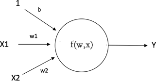
图2：神经元模型示例图
图2：神经元模型示例图
上述模型对于神经网络说来说具有重要的意义，它是神经网络研究的开端。您可能会很诧异，几个带有箭头线段、一个圆形竟然就能表示 M-P 神经元模型？ 正所谓大道至简，它的确就是神经元模型，上图所示模型由 3 部分组成，从左往右依次为：神经元的输入、输入信号处理单元，以及神经元的输出。
M-P 模型采用数学模型模拟了生物神经元所包含的细胞体、树突、轴突和突出等生理特征。通过 M-P 模型提出了神经元的形式化数学描述和网络结构方法，从而证明了单个神经元能执行逻辑功能，但由于模型中的权重和偏置是人为设置的，因此该模型并不具备学习的能力。
3) M-P模型解析
我们知道，神经元是一种多端输入单端输出的信息处理单元，因此 M-P 神经元模型也遵循这个原理。神经元的输入端通常会被给予不同的权重，来权衡不同输入信号的重要程度，如图 2 所示是一个有 3 个输入，一个输出的神经元模型，该神经元模型接收 3 个输出信号，然后给予输入信号不同的权重，神经元的输入信号经过处理后得到神经元输出。注意，这里所说的信号可以理解为数据集中的数据样本。4) 信息处理单元
介于输入和输出之间的圆圈称为输入信息处理单元（即节点），之所以画成圆圈也是一种约定俗成的表示方式，而这个信息处理单元可以看成一个函数，当给这个模型“喂入”一个数据时，就会产生一个对应的输出。早期的 MP 神经元模型可以看成一种线性分类器，通过检验 f(x,ω) 的正负来识别两种不同类别的时输入。由此可知，该模型需要正确设置权重参数，才能使模型的输出对应所期望的类别。注意：这里的 x 是表示输入值，ω 是输入的权重值，f(x,ω) 是一个线性函数，这也决定了该模型只能解决简单的线性问题，而对于复杂的数据分布，就无法达到理想的拟合效果。
感知机模型
新事物的诞生需要大众的一个认知过程，并非一问世就能一鸣惊人，虽然早在 1943 年基于 M-P 神经元人工神经网模型就被提出，但当时并没有引起人们的重视。直到 20 世纪 50年代（1957年），美国学者罗森勃拉特提出了感知器（或称感知机）模型，这才引发了一次 AI 领域的研究热潮，因此从某种意义上来说，感知器模型是第一个具有学习能力的神经网络，该模型能根据每个类别的输入样本来学习权重。1) 感知器模型
感知器模型，也可称为单层感知器，它是最简单的神经网络，它包含输入层和输出层，并且层与层之间直接相连。该模型从神经元模型的基础上发展而来，单层感知器能模拟逻辑与、逻辑或、逻辑非和逻辑与非等操作，单层感知器模型如下：
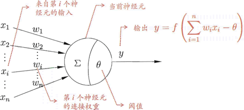
图3：感知器模型
虽然具备了学习的能力，但该模型只能解决简单的线性分类和线性回归问题，对于线性不可分问题（即异或问题，xor）仍无法解决（1969年，科学家明斯基和佩珀特证明）。如下图所示，无法找到一条直线可以把圆形和菱形分开：
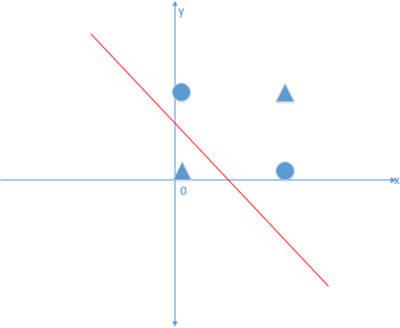
图4：线性不可分问题
感知器模型算法与神经元模型类似，是一个单层神经元结构，它首先对输入的数据进行加权求和，然后将得到的结果与阈值进行比较，假如与所期望的输出有较大误差，就对权值参数进行调整，反复多次，直到误差满足要求时为止。由上图可知单层感知器的输出为：
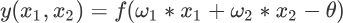
下面举个简单例子，看看单层感知器如何完成逻辑与运算（即 And，x1 ∧ x2）:
令 w1 = w2 =1，θ = 1.5，则 y =f(1*x1+1*x2-1.5)，显然，当 x1 和 x2 均为 1 时，y 的值为 1；而当 x1 和 x2 中有一个为 0 时，y 的值就为 0（通过 y 值的正负来取值，正值取值 1，负值取值 0，从而实现线性分类），当然逻辑或运算、与逻辑非运算也可通过此方法验证。
异或是一个数学运算符号，使用 ⊕ 来表示，计算机一般用 ^ 来表示。异或也叫半加运算，其运算法则相当于不带进位的二进制加法，用 1 表示真，用 0 表示假，运算法则为“同为 0，异为 1”。：
0⊕0=0 1⊕0=1 0⊕1=1 1⊕1=0
因此 w1、w2 和 θ 必须满足以下方程组：
0 + 0 - θ ＜ 0 --> θ > 0 ω1 + 0 - θ ≥ 0 --> 0 ≥ θ - ω1 0 + ω2 - θ ≥ 0 --> 0 ≥ θ - ω2 ω1 + ω2 - θ ＜ 0 --> θ > ω1 + ω2
将上述数值带入方程组后，只有第一个方程组是成立，其余方程均不成立。由此得出单层感知器模型是无法解决异或问题的（线性不可分问题）。
2) 激活函数
由上述函数表示式可知，感知器是一个二分类的线性模型，输入与输出结果是一组线性组合，这极大的限制了感知器的应用范围。但这一问题很快便得到了解决，我们只需将非线性函数以“激活函数”的身份加入神经网络算法中，就可以扩展感知器模型的应用范围。通过它对线性函数的输入结果进行非线性映射，然后将结果作为最终值输出。
激活函数的加入对后期神经网络的发展提供了很大支持，目前这种算法思想仍在神经网络算法中广泛使用。下图展示了带有激活函数的感知器模型：
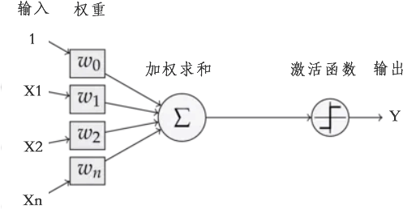
图5：感知器模型
上述感知器模型依然模拟了神经元结构，有输入（input）、权重（weight）、前馈运算（feed forward）、激活函数（activation function）、输出（output）等部分组成。注意，这里的前馈运算指的是图 3 中的『加权求和』，即在没有使用激活函数时输入值的加权求和结果，有时也记做『logit』。
通过上述模型很容易实现二分类。只需将对加权求和的结果值进行判断即可，比如 x>0 为 1 类，若 x <=0 则为 0 类，这样就将输出结果值映射到了不同类别中，从而完成了二分类任务。激活函数公式如下：
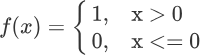
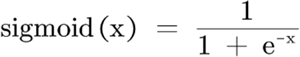
注意：常用非线性激活函数有多种，比如 sigmoid 函数、Tanh 函数、Relu 函数等
3) 多层感知器模型
由于单层感知器模型无法解决非线性可分问题，即 xor 问题（1969年，马文·明斯基证明得出），这也导致了神经网络热潮的第一次大衰退。直至 20 世纪 80 年代，多层感知器模型（Multi -Layer Perceptrons，缩写为 MLP）的提出（1981年，韦伯斯提出），神经网络算法再次回归大众视野。与单层感知器模型相比，该模型在输入层与输出层之间增加了隐藏层（Hidden），同时输出端，由原来一个增至两个以上（至少两个），从而增强了神经网络的表达能力。注意，对于只有一层隐藏层的神经网路，称为单隐层神经网络或者二层感知器，网络拓扑图如下所示：
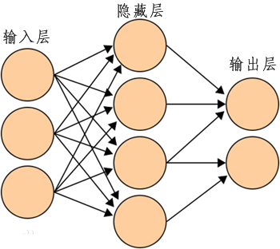
图6：多层感知器模型
图6：多层感知器模型
从图 6 不难发现，多层感知器模型是由多个感知器构造而成的，模型中每一个隐藏层节点（或称单元）都可以看做成一个感知器模型，当我们将这些感知器模型组合在一起时就可以得到“多层感知器模型”。输入层、隐藏层与输出层相互连接形成了神经网络，其中隐藏网络层、输出层都是拥有激活函数的功能神经元（或称节点）。
在神经网络中的隐藏层可以有多层，当隐藏层有多层，且形成一定“深度”时，神经网络便称为深度学习（deep learning），这就是“深度学习”名字的由来。因此，深度学习就是包含了多个隐藏层的多层感知器模型。如下图所示，是具有两个隐藏层的神经网络：
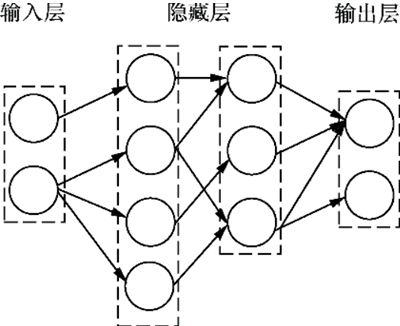
图7：多层感知器模型（两个隐藏层）
图7：多层感知器模型（两个隐藏层）
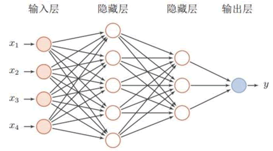
图8：全连接神经网络
图8：全连接神经网络
多层感知器的诞生，解决了单层感知器模型无法解决的异或问题。下面简单分析一下解决过程。如图所示是包含了一个隐藏层的多层感知器模型：
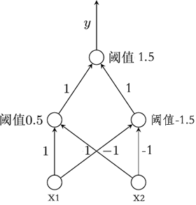
图8：多层感知器解决异或问题
图8：多层感知器解决异或问题
在多层感知器模型中，隐藏层中的每一个节点都是想当于一个感知器模型。下面将输入值（x1 和 x2）带入隐藏层节点，可得以下函数式（这里的函数指的是激活函数）：
左隐藏层节点：f1(x1+x2-0.5) 右隐藏层节点：f2(-x1-x2+1.5)由此可知输出层的函数式如下：
f3(f1+f2-1.5)根据异或法则“同为 0，异为 1”，分别将 (0,1)，(1,0)，(0,0)，(1,1) 带入上述三个函数分别进行计算，可得以下结果（正数为 1，负数为 0）：
(0,1)：f1(0+1-0.5)=1 f2(0-1+1.5)=1 --> f3(1+1-1.5)=1 (1,0)：f1(1+0-0.5)=1 f2(-1-0+1.5)=1 --> f3(1+1-1.5)=1 (0,0)：f1(0+0-0.5)=0 f2(0-0+1.5)=1 --> f3(0+1-1.5)=0 (1,1)：f1(1+1-0.5)=1 f2(-1-1+1.5)=0 --> f3(1+0-1.5)=0可以看出输出层 f3 函数的结果完全符合异或运算法则，因此多层感知器可以解决“异或问题”。从函数图像上来看，多层感知器使用两条直线解决了线性不可分问题：
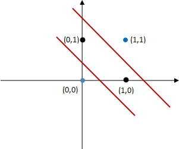
图9：分类区域
图9：分类区域
上图所示，位于红色直线之间的属于正类，而位于区域之外则属于负类。当然图像中只是包含了四个点而已，若是复杂的数据则可以选择不同的激活函数，比如 sigmoid 函数等。
反向传播算法
多层感知器的虽然解决了线性不可分问题，但随着隐藏层网络的加深，多层网络的训练和参数计算也越来越困难，因此多层感知器也显得“食之无味”。简单来说，就是当时的人们还不知道应该怎么训练多层神经网络，甚至不相信多层神经网络也是同样能被训练的。直到 1986 年，深度学习教父 Hinton 等人对反向传播算法（Backpropagation algorithm，即误差逆向传播算法，简称 BP算法）进行了重新描述，证明了该算法可以解决网络层数过深导致的参数计算困难和误差传递等问题。
反向传播算法是一种用于训练神经网络的有监督学习算法，基于梯度下降（gradient descent）策略，以目标的负梯度方向对参数进行调整。但受限于当时（20世纪80年代）计算机算力不足等因素的影响，BP 算法只能以简单低效的方式来解决少数层神经网络训练问题，但即使如此，也已经弥足珍贵。
BP 算法的出现再次引发了 AI 研究的热潮，它是一款非常成功的神经网络算法，直到今天，该算法仍在深度学习领域发挥着重要的作用（用于训练多层神经网络）。
总结
经过几十年的发展，到目前为止，人工神经网络的发展进入了深度学习阶段，在这一阶段提出了许多新的神经网络模型，比如循环神经网络、卷积神经网络、生成对抗网络、深度信念网络等等。同时，深度学习又为人工神经网络引入了新的“部件”，比如卷积层、池化层等。如今深度学习已非“人工神经网络”一词所能完全替代，可谓是“青出于蓝，而胜于蓝”，它已发展出一整套复杂的知识体系，哪怕只进行概要性地介绍也都会花费大量的篇幅，因此这里不做重点讨论。
纵观人工神经网络的发展历程，从生物神经元起源，再到多层感知器模型，历经三起两落，终于成为机器学习算法中的佼佼者。理解人工神经网络的发展历程，同时掌握各个模型的核心思想，对于后续知识的学习非常重要。关注公众号「站长严长生」，在手机上阅读所有教程，随时随地都能学习。内含一款搜索神器，免费下载全网书籍和视频。

微信扫码关注公众号